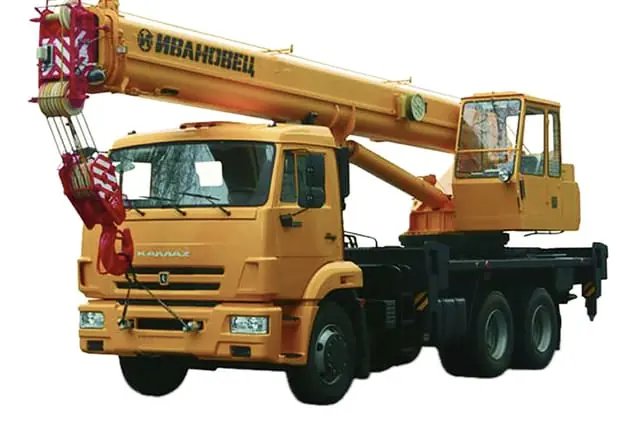
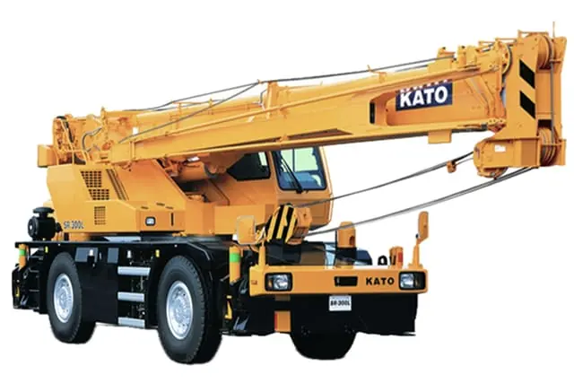
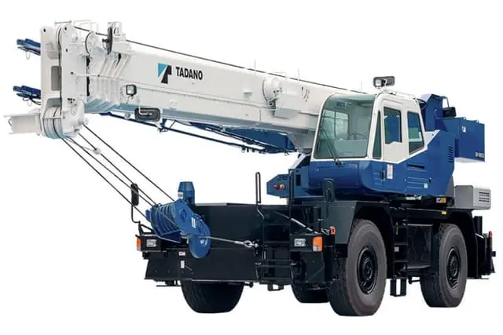
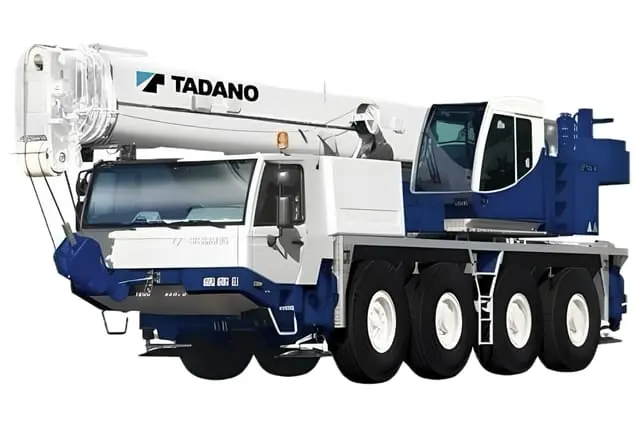
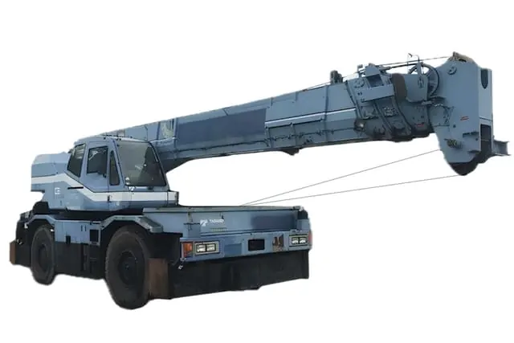
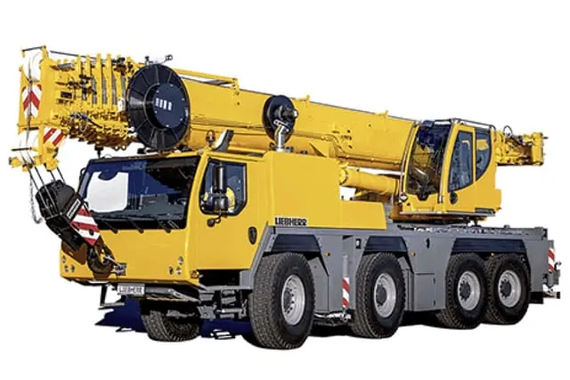
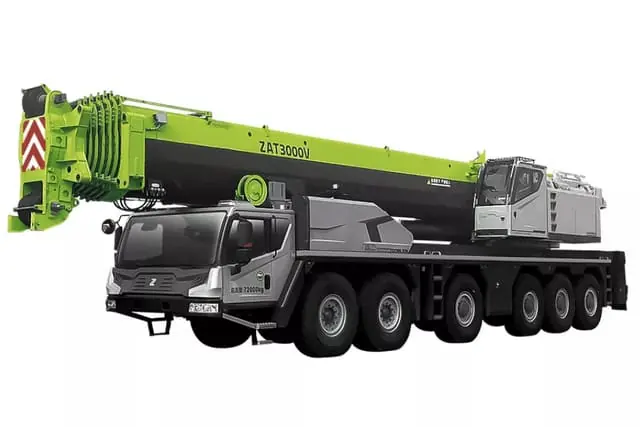
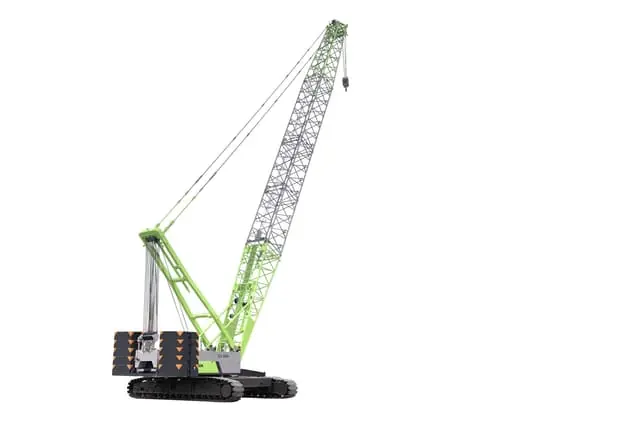
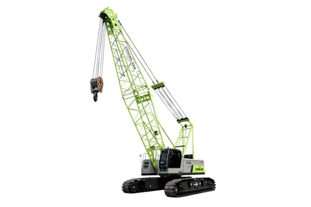
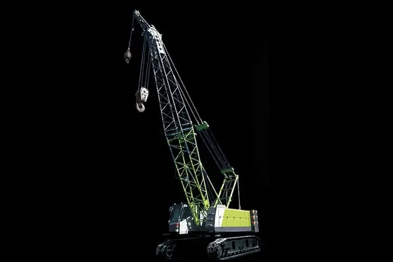

КС-45717К-1 на шасси КАМАЗ
АвтокранМонтаж на стеснённой площадке
Десять машин: от автокрана на шасси КАМАЗ до гусеничного крана тяжёлого класса. Монтаж конструкций, разгрузка, длительная работа на одном объекте.
Кран подбирается не по грузоподъёмности в паспорте, а по массе груза на нужном вылете: чем дальше от оси, тем меньше машина берёт. Назовите массу, расстояние и высоту — подберём под задачу.
Крану нужна ровная площадка под выносные опоры и подкладки. Люки, подземные сети и свежая засыпка под опорой — прямой риск, это проверяется заранее.
Тяжёлый кран не везде пройдёт: арки, повороты, ограничения по массе на дорогах. Для больших машин маршрут смотрят отдельно.
На разовую разгрузку берут автокран, на месяц монтажа — гусеничный: он не тратит время на установку опор и работает с грузом на весу.

Монтаж на стеснённой площадке

Монтаж конструкций

Монтаж конструкций

Монтаж конструкций

Монтаж конструкций

Тяжёлый монтаж, большой вылет

Тяжёлый монтаж

Длительный монтаж на объекте

Монтаж конструкций

Монтаж конструкций
Снимки каталожные: это изображение модели, а не конкретной единицы парка. Грузоподъёмность, вылет стрелы и ставку подтверждает диспетчер под задачу.